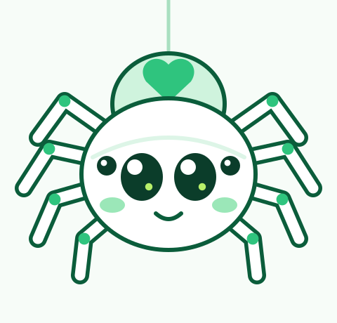

Spider-Bot Courier
Carries notes and pictures from your phone to your own Google Drive.
What it is
Spider-Bot Courier is a small Android app made for personal use. It is the phone-side companion of Spider-Bot, a Windows program that files tabletop role-playing notes into an Obsidian vault.
What it does
- At set times (06:00 and 18:00 by default), or when you tap Send, it looks through the phone's Download folder for recently downloaded Markdown notes (
.md), pictures, and zip files of notes and pictures. - It uploads them to one folder in your own Google Drive, called “Spider-Bot catch”.
- It shows you a list of what it uploaded.
- Once Google Drive has confirmed a note, or a zip file containing notes, the app removes it from the phone. This can be switched off in the app's settings. Pictures stay on the phone.
- A picture is uploaded by itself only when it was saved from ChatGPT or is named after one of your notes. Other recent pictures are listed in the app, and are uploaded only if you choose them.
How it uses your Google account
The app asks for one Google permission: access to the files and folders in Google Drive that the app itself created. It uses this to create the “Spider-Bot catch” folder and to upload files into it. It cannot see, change or delete anything else in your Drive.
Your files go straight from your phone to your Google Drive. Nothing is sent to the maker of the app or to anyone else. The full details are in the privacy policy.
Not on Google Play. The app is built from source and installed by hand. It is not offered to the public, and there is nothing to buy or sign up for.